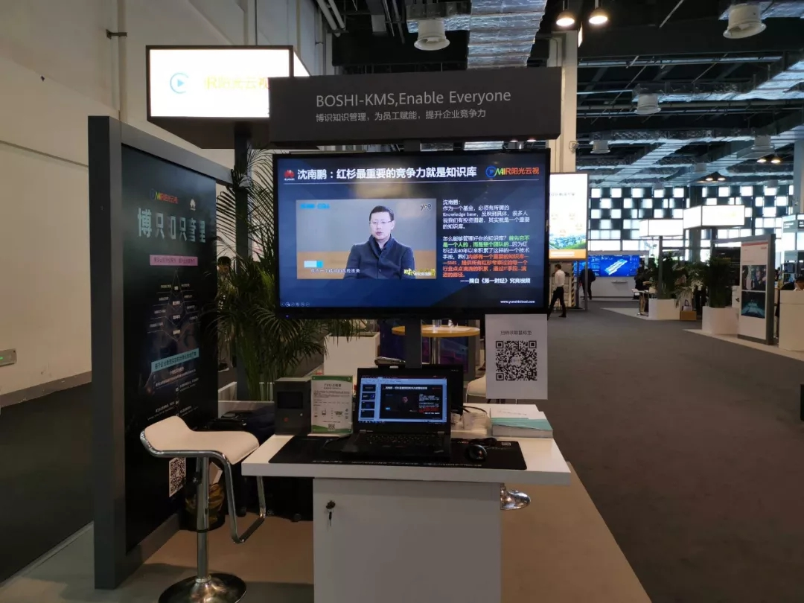
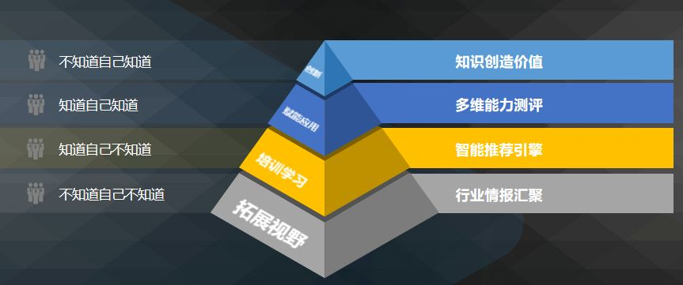

共创智能新高度|阳光云视参展2019华为全联接大会
9月18日，以「数字技术创新，推进社会经济全面可持续发展」为主题的2019华为全联接大会，在上海世博展览馆拉开帷幕，作为华为云战略合作伙伴，ONAIR阳光云视受邀出席了本次大会并携新产品--博识知识库参展亮相。

华为全联接大会 ONAIR阳光云视展台（图片来自现场）
自阳光云视与华为携手以来，双方在融媒体、新零售、云服务等领域成绩有目共睹，充分发挥各自擅长领域的优势特长，共同探讨数字技术变革为企业带来的普惠价值，以技术为根本赋能行业应用，从而推动社会和经济的全面可持续发展。
博识知识库吸引了各生态伙伴的目光，展台前的咨询者络绎不绝（图片来自现场）
博识知识库全新发布
01.什么是博识知识库？
博识企业知识库是基于SaaS云服务的一款AI*（知识管理+企业培训+人才测评）系统，实现隐形知识显性化，个人知识集体化，将无形的产物变成有形的资源，打破企业内信息孤岛，让管理者了解员工知识技能状态和学习进程，建立知识图谱、为员工提供个性化的学习支持，构建企业知识体系，提高员工的综合能力。
02.引起围观的博识知识库能做什么？
·把无序内容转化为有形资产

·把「要员工学」变成「员工要学」
传统培训模式采用大量资料填压式学习，对员工缺少学习引导，员工缺乏积极性，公司也无法持续评测每个员工的知识储备与增长。博识知识库的智能测评支持企业培训师创建自动发布考试任务，每场考试的考试内容随机生成，支持按周、月来进行周期考试，为员工选择部门类型题，让答题多元化，知识系统化，资源可视化。智能出卷组卷、自动化发布考试、系统自动判卷，有效降低培训师工作强度，提高评测效率。
AI系统可以根据员工学习轨迹和考核短板，提供个性化学习方案推荐，企业管理者只需为每个员工分配账号，员工自主学习，形成员工不断提升的闭环循环。
·智能AI+助力企业管理者
博识知识库通过构建系统完善的课程，帮助员工规划学习轨迹，提供员工的可视化报告，同时人工智能技术可以进行持续的人才测评，帮助企业管理者进行人才盘点和判别，实现员工和其岗位的全匹配，真正做到从知识管理到绩效提升，使企业稳步成长。
除了展会现场博识知识库的产品介绍以及演示外，20日下午，阳光云视公司视频云事业部总经理曹飞先生将受邀在分论坛中发表主题为《携手华为智能AI+ 开启一站式广播级视频云服务》的演讲，从媒体生产、发布、运营等方面聚焦智能AI+赋能媒体，ONAIR阳光云视愿与各方携手，构建万物互联的智能世界。
展会还在如火如荼的进行中，精彩不断，期待您的莅临。